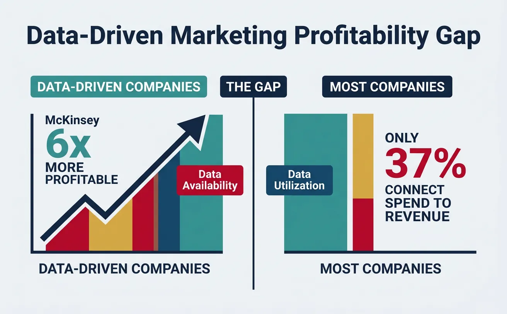
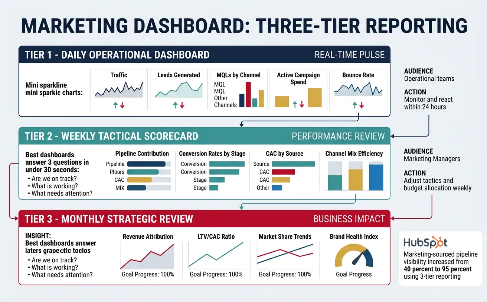
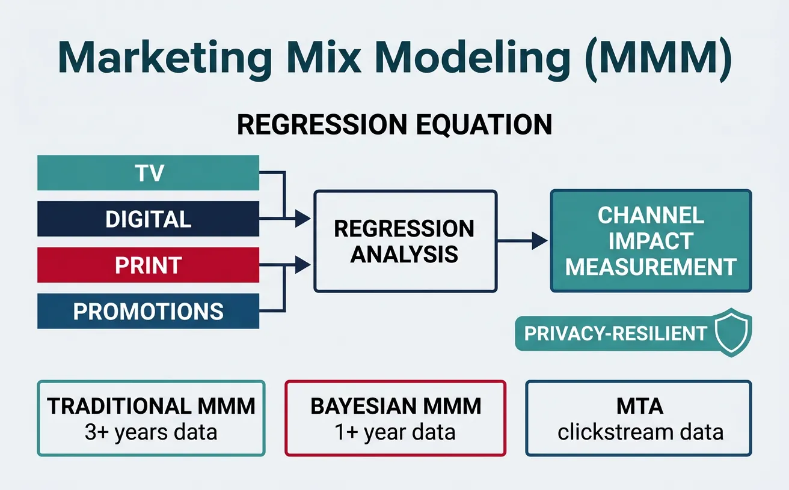
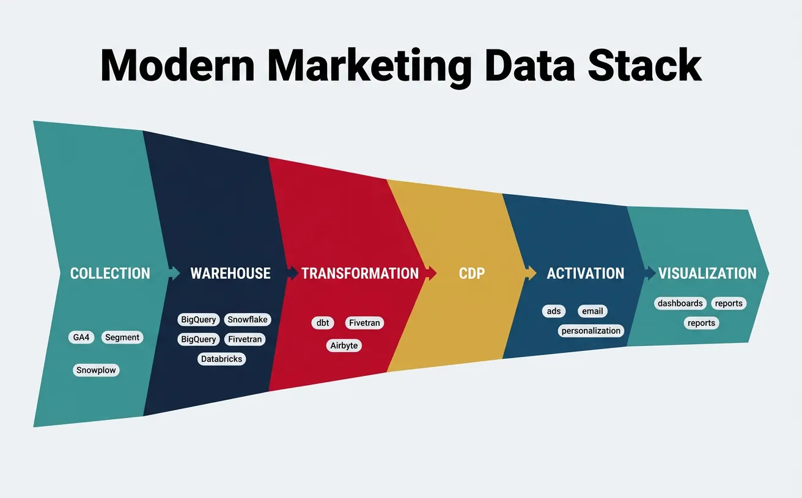

We use cookies to enhance your browsing experience, serve personalized content, and analyze our traffic.
By clicking "Accept All", you consent to our use of cookies. See our
Privacy Policy
for more information.
Part 9 of 21: Building on paid advertising from Part 8, this article explores marketing analytics—measuring what works, understanding attribution, and making data-driven decisions to optimize marketing investments.
Think of marketing analytics like a doctor's diagnostic toolkit. Without blood tests, imaging, and vital signs, a doctor is guessing. Marketing without analytics is the same — you're spending money based on intuition rather than evidence. Analytics transforms marketing from an art into a science.
Companies that adopt data-driven marketing are 6x more likely to be profitable year-over-year (McKinsey). Yet only 37% of marketers can connect marketing spend to revenue outcomes. This gap between data availability and data utilization is the biggest untapped opportunity in modern marketing.

The data-driven marketing gap: 6x more profitable, yet only 37% of marketers connect spend to revenue outcomes
The Measurement Paradox: The channels easiest to measure (paid search, email) often get the most credit, while harder-to-measure channels (content, brand, podcasts) get undervalued. Good analytics doesn't just count what's measurable — it measures what counts.
Funnel Metrics Architecture
The marketing funnel isn't just a concept — it's a measurement framework. Each stage has distinct metrics, benchmarks, and optimization levers. Understanding which metrics matter at each stage prevents the common mistake of optimizing the wrong thing.
Funnel Stage
Primary Metrics
Benchmark Range
Optimization Lever
Awareness (TOFU)
Impressions, Reach, Brand Recall, SOV
CPM: $5–$25, Reach: varies
Channel mix, creative, targeting
Consideration (MOFU)
CTR, Engagement Rate, Time on Site, Pages/Session
CTR: 1–3%, Engagement: 2–5%
Content quality, ad relevance, UX
Conversion (BOFU)
Conversion Rate, CPA, ROAS, Pipeline
CVR: 2–5%, CPA: industry specific
Landing pages, offers, friction removal
Retention
Churn Rate, NRR, Repeat Purchase Rate
Churn: 3–7%/mo, NRR: 100–130%
Onboarding, lifecycle emails, product
Advocacy
NPS, Referral Rate, Reviews, UGC
NPS: 30–70, Referral: 5–15%
Customer experience, referral programs
KPI Frameworks
The North Star Metric: Every company needs one metric that best captures the core value you deliver to customers. It aligns every team around a single measure of success:
Airbnb: Nights booked
Spotify: Time spent listening
Slack: Messages sent per team
HubSpot: Weekly active teams
Facebook: Daily active users
Metric Hierarchy: Input → Output → Outcome
Metric Type
What It Measures
Examples
Who Cares
Input Metrics
Activities you control
Ads published, emails sent, content produced
Marketing team (daily)
Output Metrics
Direct results of activities
Clicks, leads, MQLs, SQLs
Marketing managers (weekly)
Outcome Metrics
Business impact
Revenue, CAC, LTV, pipeline, market share
CMO / C-suite (monthly/quarterly)
Dashboards & Reporting
The best marketing dashboards answer three questions in under 30 seconds: Are we on track? What's working? What needs attention? Everything else is noise.

Three-tier marketing dashboard: daily operational metrics, weekly tactical scorecards, and monthly strategic business reviews
Case Study: HubSpot's Marketing Analytics Framework
Analytics$2.2B Revenue (2024)
Framework: HubSpot built a 3-tier reporting cadence that connects daily operations to quarterly business outcomes:
Daily Dashboard: Traffic, leads, MQLs by channel — operational teams monitor and react within 24 hours
Weekly Scorecard: Pipeline contribution, conversion rates, CAC by source — managers adjust tactics and budget allocation
Key Innovation: HubSpot's "smarketing" alignment connects every marketing dollar to closed revenue using closed-loop reporting. Their marketing-sourced pipeline visibility increased from 40% to 95%, enabling predictable revenue forecasting.
The Vanity Metrics Trap: Impressions, followers, and page views feel good but rarely correlate with revenue. Focus on conversion metrics (leads, pipeline, revenue) and efficiency metrics (CAC, ROAS, LTV:CAC ratio). A campaign generating 10M impressions and zero revenue is a failure. A campaign generating 100 impressions and 10 customers is a win.
Attribution Modeling
Attribution Models
Think of attribution like a basketball assist. When a player scores, who gets credit — the player who shot, the one who passed, or the one who set the screen? Attribution modeling answers this question for marketing: which touchpoints deserve credit for a conversion?
The Attribution Maturity Ladder: Start with last-touch (simple, actionable) → graduate to position-based (balanced) → advance to data-driven (algorithmic) when you have sufficient conversion volume ($50K+ monthly ad spend and 600+ monthly conversions). No model is "right" — use multiple models to triangulate truth.
Multi-Touch Attribution (MTA)
Multi-touch attribution tracks every interaction a customer has with your brand across channels, devices, and sessions. It answers: "What combination of touchpoints drives the highest conversion probability?"
Case Study: Adidas Multi-Touch Attribution Transformation
Attribution$23B Revenue
Challenge: Adidas was over-investing in last-click channels (paid search, retargeting) and under-investing in brand-building (display, video, social) because last-touch attribution made upper-funnel channels look unprofitable.
Discovery: When they implemented multi-touch attribution + Marketing Mix Modeling, they discovered that brand advertising drove 65% of sales across all channels — including search and direct. Cutting brand spend would have collapsed their entire funnel.
Result: Adidas shifted budget from 77% performance / 23% brand to 60% brand / 40% performance, resulting in €1.5 billion in incremental revenue over 3 years. Their CMO publicly stated: "We were over-investing in digital performance at the expense of brand building."
Incrementality Testing
Attribution tells you which channels touched a converter. Incrementality testing tells you which channels actually caused the conversion. This is the gold standard of marketing measurement — the difference between correlation and causation.
Test Type
How It Works
Best For
Min. Duration
Holdout Test
Show ads to 90%, withhold from 10%
Measuring true ad lift
2–4 weeks
Geo-Experiment
Run ads in some regions, not others
Measuring channel incrementality
4–8 weeks
Ghost Ads
Track users who would have seen ad but didn't
Display and programmatic lift
2–3 weeks
Conversion Lift
Platform-native A/B test (Meta, Google)
Platform-specific ROI validation
2 weeks
The Incrementality Formula:Incremental Conversions = Test Group Conversions − Control Group Conversions (normalized). If your test group (saw ads) converted at 4% and control group (no ads) converted at 3%, your true incremental lift is 1 percentage point — meaning 25% of attributed conversions would have happened anyway. This insight alone can save 20–30% of wasted ad spend.
Marketing Science
Marketing Mix Modeling (MMM)
Marketing Mix Modeling uses statistical regression to measure the impact of each marketing channel on business outcomes, accounting for external factors like seasonality, economic conditions, and competitive activity. Unlike MTA (which tracks individual clickstreams), MMM works with aggregate data — making it privacy-resilient and future-proof.

Marketing Mix Modeling uses statistical regression on aggregate data to measure each channel's true impact on revenue
Approach
Data Source
Strengths
Limitations
Traditional MMM
3+ years aggregate spend/revenue
Cross-channel holistic view, privacy-safe
Slow (quarterly updates), expensive
Modern MMM (Bayesian)
1+ year aggregate + priors
Faster updates, open-source tools
Requires statistical expertise
Multi-Touch Attribution
Individual user clickstream
Granular, real-time optimization
Cookie-dependent, walled gardens
Incrementality Tests
Controlled experiments
Causal proof, highest accuracy
Expensive, limited scope per test
Unified Measurement
All three combined
Most comprehensive and accurate
Complex, resource-intensive
Open-Source MMM Tools: Meta's Robyn (R-based) and Google's Meridian (Python-based) have democratized MMM. Companies like Nespresso, Uber, and Headspace have publicly shared how they use these tools to optimize $50M+ annual ad budgets. You can now build institutional-grade MMM with a data scientist and 12 months of spend data.
Marketing Experimentation
The best marketing organizations run 50–100+ experiments per quarter. Experimentation isn't just A/B testing buttons — it's a systematic approach to reducing uncertainty and finding the highest-impact levers in your marketing system.
Experiment Type
What You Learn
Sample Size Needed
Statistical Method
A/B Test
Which variant performs better
1,000+ per variant (for 5% MDE)
Frequentist hypothesis testing
Multivariate (MVT)
Interaction effects between elements
10,000+ total
Factorial design
Bandit Test
Optimal allocation while learning
Lower (adaptive)
Thompson Sampling / UCB
Quasi-Experiment
Causal impact without randomization
Varies
Difference-in-differences, synthetic control
The P-Value Trap: A p-value of 0.05 doesn't mean there's a 95% chance your result is real. It means if there were no difference, you'd see this result 5% of the time by chance. With 20 tests running, you'll get one false positive. Use Bonferroni correction for multiple comparisons, and always calculate practical significance (effect size), not just statistical significance.
Predictive Analytics
Predictive analytics uses historical data and machine learning to forecast future customer behavior. Instead of reacting to what happened, you anticipate what will happen — and act preemptively.
Predictive Model
What It Predicts
Business Impact
Data Required
Lead Scoring
Conversion probability per lead
30–50% increase in sales efficiency
Lead attributes + conversion history
Churn Prediction
Which customers will leave
10–25% reduction in churn rate
Usage data + engagement signals
CLV Prediction
Future revenue per customer
Optimize acquisition spend by value
Transaction history + tenure data
Propensity Modeling
Likelihood of specific action
2–4x improvement in targeting
Behavioral data + demographics
Next Best Action
Optimal message/offer per user
15–30% lift in engagement
Multi-channel interaction history
Data Infrastructure
Modern Marketing Data Stack
The modern marketing data stack connects collection → storage → transformation → activation → visualization into a unified pipeline. Without proper data infrastructure, even the best analytics frameworks produce garbage-in, garbage-out results.

The modern marketing data stack: collection → warehouse → transformation → CDP → activation → visualization in a unified pipeline
Layer
Purpose
Key Tools
Marketing Use Case
Collection
Capture events and data
GA4, Segment, Snowplow, GTM
Track user behavior across touchpoints
Storage (Warehouse)
Centralize all data
BigQuery, Snowflake, Databricks
Single source of truth for all marketing data
Transformation
Clean, model, enrich data
dbt, Fivetran, Airbyte
Build marketing models and attribution
CDP (Customer Data)
Unify customer profiles
Segment, mParticle, Rudderstack
Create unified customer view for targeting
Activation (Reverse ETL)
Push data to marketing tools
Census, Hightouch, Polytomic
Sync audiences to ad platforms and CRM
Visualization
Dashboards and reporting
Looker, Tableau, Power BI, Mode
Marketing dashboards and executive reporting
Case Study: Notion's Data-Driven Growth Analytics
Data Stack$10B Valuation
Challenge: Notion needed to understand which of their 30M+ users were most likely to upgrade from free to paid, and which acquisition channels produced the highest-LTV customers.
Data Stack: Snowplow (event collection) → Snowflake (warehouse) → dbt (transformation) → Looker (visualization) → Census (reverse ETL to ad platforms). They built a Product-Qualified Lead (PQL) model scoring users based on workspace activity, template usage, and collaboration patterns.
Results: PQL-scored users converted at 8x the rate of unscored leads. They identified that users who created 3+ pages and invited 1+ collaborator within 7 days had a 65% conversion probability, enabling precisely timed upgrade prompts and targeted advertising to high-propensity lookalike audiences.
Privacy & Compliance
Cookie deprecation and privacy regulations (GDPR, CCPA, DMA) are fundamentally reshaping marketing analytics. Marketers must adopt privacy-first measurement strategies that deliver insights without relying on cross-site tracking.
Privacy-First Approach
How It Works
Replaces
Maturity Level
First-Party Data Strategy
Collect data directly from owned channels
Third-party cookies
Essential (do now)
Server-Side Tracking
Process events on your server, not browser
Client-side pixel tracking
Intermediate
Conversion APIs
Send conversion data directly to platforms
Browser-based conversion pixels
Essential (Meta CAPI, Google ECC)
Data Clean Rooms
Privacy-safe data matching with partners
Cookie-based audience matching
Advanced
Marketing Mix Modeling
Aggregate-data based measurement
Individual-level attribution
Essential for holistic measurement
Data-Driven Decision Making
The RAPID Decision Framework for Marketing Data:
R — Recommend: Analytics team proposes action based on data (e.g., "shift 15% budget from display to search")
A — Agree: Stakeholders who must agree (channel owners, finance)
P — Perform: Team that executes the change
I — Input: Additional perspectives from sales, product, executive team
D — Decide: Single decision-maker (CMO/VP) who owns the final call
Tools & Practice
Analytics Dashboard Canvas
Use this canvas to design your marketing analytics framework. Download as Word, Excel, PDF, or PowerPoint for your measurement toolkit.
Analytics Dashboard Canvas
Design your marketing measurement framework. Download as Word, Excel, PDF, or PowerPoint.
Draft auto-saved
All data stays in your browser. Nothing is sent to or stored on any server.
Practice Exercises
Exercise 1: Attribution Model Comparison
A customer's journey includes: Google Ad (Day 1) → Blog post (Day 5) → Email click (Day 12) → Facebook retarget (Day 14) → Direct visit + purchase (Day 15). Calculate credit allocation under:
First-touch attribution
Last-touch attribution
Linear attribution
Time-decay (7-day half-life)
Position-based (40/20/40)
Which model would you recommend and why?
Exercise 2: Marketing Dashboard Design
Design a 3-tier marketing dashboard for a D2C e-commerce company ($5M revenue, $100K/month ad spend):